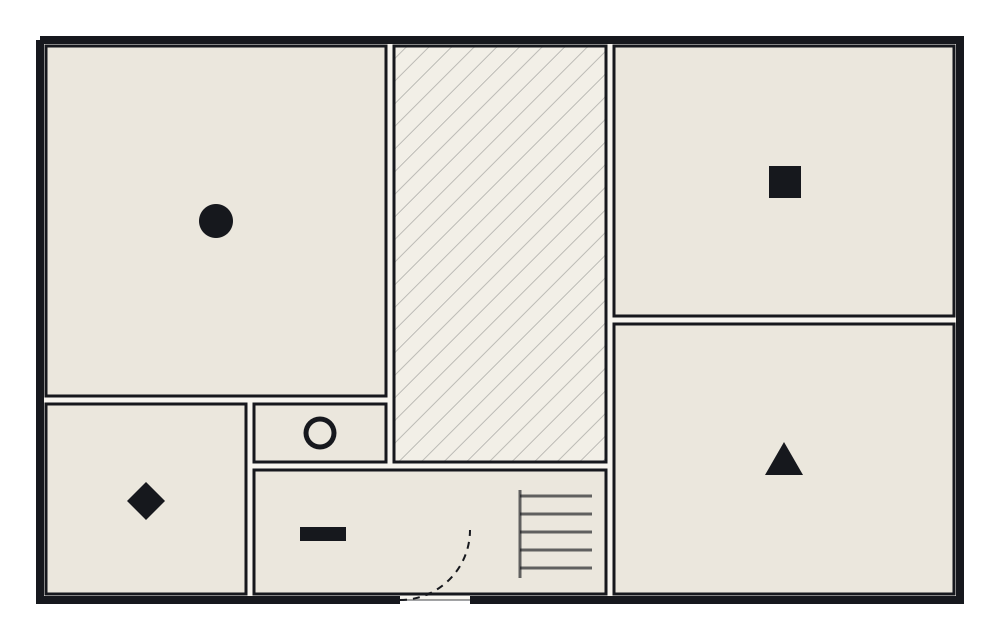
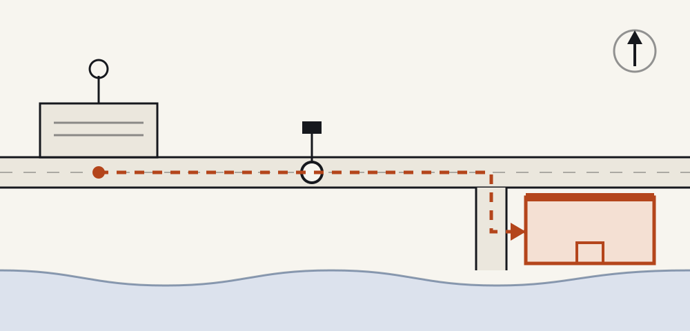

Getting around inside
Everything programmed is on one floor and step free from the entrance. The only stair goes up to a gallery, and nothing is held up there. Doorways are wide enough for a wheelchair throughout.
The Old Waterworks is an invented building on an invented quay. The plan below is a drawing, not a live map service, and it carries no text of its own so every room name stays editable on this page.

The old filter hall, and the biggest room. Most Ground talks happen here. Three hundred seats, a hard floor and no raised stage.
Long tables and good light from the north. Bench workshops that need space to spread out run here.
The noisiest room, with the two remaining pumps still in it. Open on Friday and Saturday only.
Chairs in a circle, no table. Floor sessions and open tables are held here.
The desk, the cloakroom and the water. Ask here about a place at a Bench workshop.
Kept empty and unprogrammed for all three days. No talking, no laptops, no exceptions.
The drawing below is the walk from the station: out of the front entrance, along the one street, past the tram stop and down to the water. About fifteen minutes at a slow pace.

The street outside is cobbled for the last hundred metres. If that is a problem, write ahead and somebody will meet you at the tram stop and take you round by the flat service road instead.
hello@example.comWritten as an example of what a congress ought to say plainly. Replace all of it with what is true of your own building.
Everything programmed is on one floor and step free from the entrance. The only stair goes up to a gallery, and nothing is held up there. Doorways are wide enough for a wheelchair throughout.
The Great Hall and the Turbine Room have a hearing loop. Speakers are asked to describe what is on screen, because nothing is projected that is not also said aloud.
Lunch is in the courtyard on all three days, under cover if it rains. There is always a vegan option and always something without gluten. No prices appear anywhere in this template.
Off the foyer, kept empty for all three days. It is on the plan, it is in the programme, and it is nobody's overflow space.
Children are welcome in every room. There is no crèche, so somebody has to be with them, and the Pump House is loud.
Nothing is recorded or streamed. If somebody points a camera at you in a Floor session, ask them to stop and they will.
Doors are the building, not the programme. The first session on each day starts later than the doors.
There is no registration in this template. No form is wired to anything, no ticket is sold and no payment service is loaded. Where a real congress would put a booking flow, this edition puts an email address, because a template should not pretend to hold a service it does not have.
Plan your three days in the gridThe Old Waterworks, Example Quay, the station, the tram stop and everything described on this page are illustrative. The building does not exist, the walk is invented, and the access notes are an example of the kind of thing worth writing down, not a description of a real place.